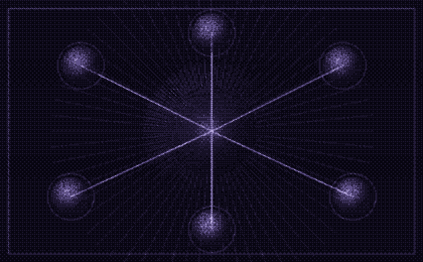
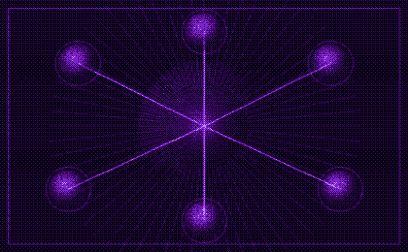

Agents that run on your own machine
My work starts from a simple constraint: the model, the data and the execution environment should belong to whoever runs them. That means local inference, explicit safety policies, role-based access control and SSH automation over my own Linux nodes — auditable and deterministic instead of opaque.
Python
TypeScript
SSH automation
RBAC & audit logs

